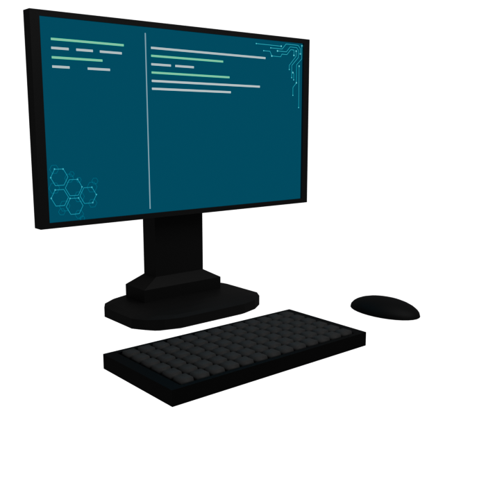

Sono un ragazzo neo-diplomato presso l'istituto tecnico ISISS Valle Seriana, Gazzaniga (BG), indirizzo informatica e telecomunicazioni. La mia formazione mi ha permesso di acquisire solide competenze nel campo della programmazione, del networking e dello sviluppo di soluzioni digitali innovative.
Intraprendo questo percorso con l’obiettivo di migliorare continuamente le mie capacità pratiche e teoriche, affrontando progetti concreti che mi permettano di crescere professionalmente. Sono motivato a mettere a disposizione le mie competenze per offrire servizi di qualità a chiunque ne abbia bisogno, con attenzione alla precisione, alla creatività e alla soddisfazione del cliente.
Progetto siti moderni ottimizzati per attrarre clienti verso la vostra attività
Hai bisogno di un software personalizzato con funzioni specifiche? Ti aiutiamo noi
Quella che è una web app può anche essere trasformata in una pratica applicazione desktop, veloce da avviare, ottimizzata e versatile per tutti gli utilizzi che hai in mente
Soluzioni di intelligenza artificiale sviluppate su misura

Sviluppo applicazioni web utilizzando tecnologie native come HTML, CSS e JavaScript, oltre a framework moderni per progetti complessi.
Framework come Electron permettono di trasformare applicazioni web (ad esempio React) in programmi eseguibili su sistema operativo.
Compatibile con Windows, macOS e Linux.
Sviluppo backend e API REST per applicazioni web e software.
Gestione autenticazione, sicurezza, database e logica server.
Progettazione e gestione database SQL
Struttura dati e ottimizzazione delle query, integrazione con le applicazioni.